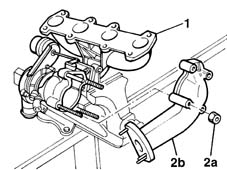
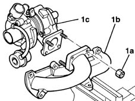

1064A20 turbo/manifold/sleeve assembly dismantle
- Path
- Procedures > 10 ENGINE UNIT > 1064 ENGINE TURBOCHARGING SYSTEM > 1064A turbo charger assembly > 1064A20 turbo/manifold/sleeve assembly dismantle
- Kind
- repair procedure (removal / refitting; the operation number is the code)
- Applies to
- engines: 1.9 JTD 8V; all production periods
- Interactive page
- https://sloeber94.github.io/elrnDB-fMltpl/en/#/2891425
Applies to: engines: 1.9 JTD 8V; all production periods
 Dismantling
Dismantling
1. Position the turbocharger assembly in a vice.
2. Unscrew nuts (2a) and remove exhaust pipe coupling sleeve (2b).

Applies to: engines: 1.9 JTD 8V; all production periods
1. Unscrew nuts (1a) and remove exhaust manifold (1b) from turbocharger (1c).
